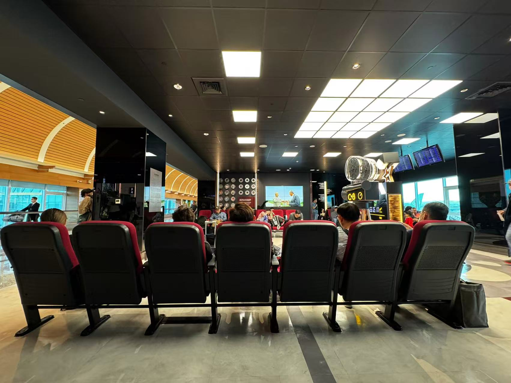
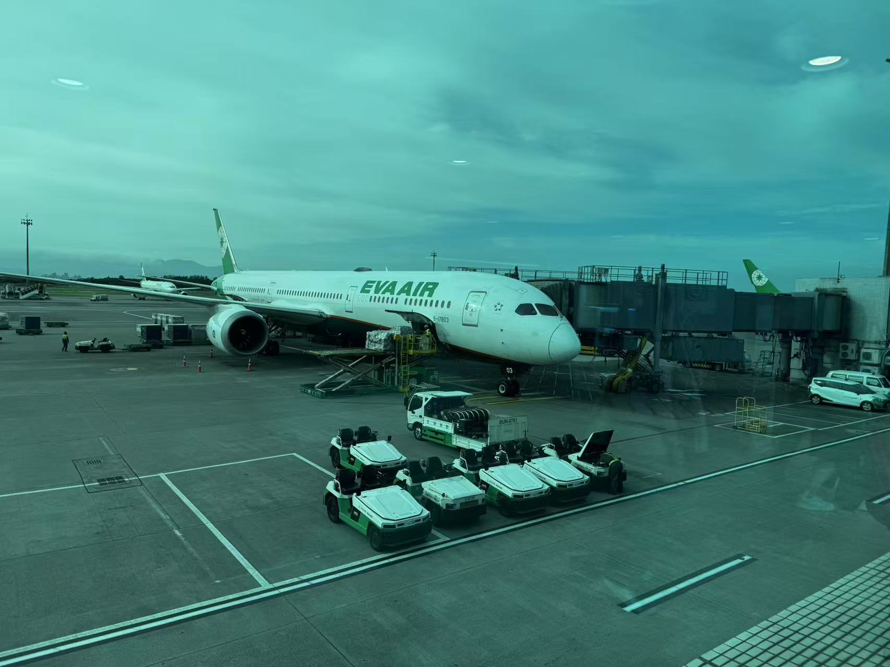
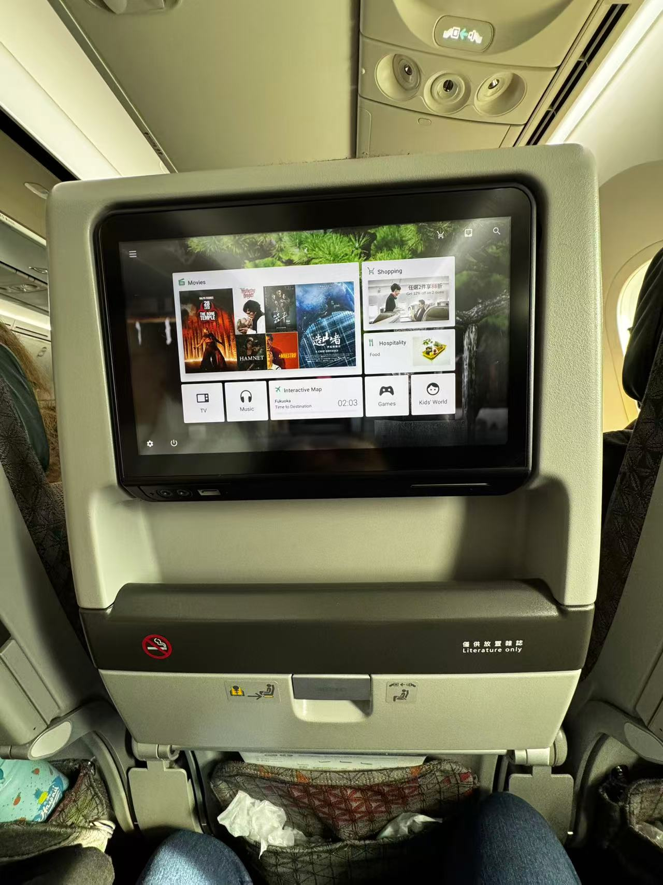
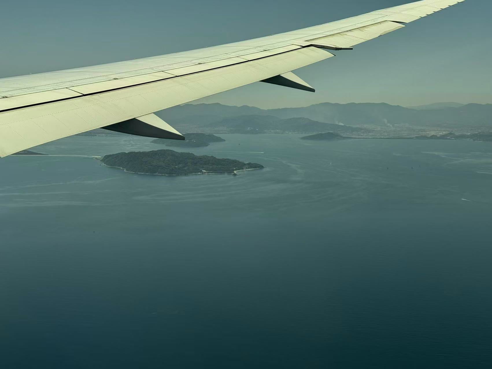
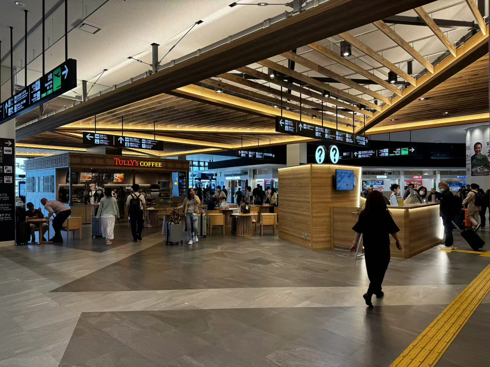
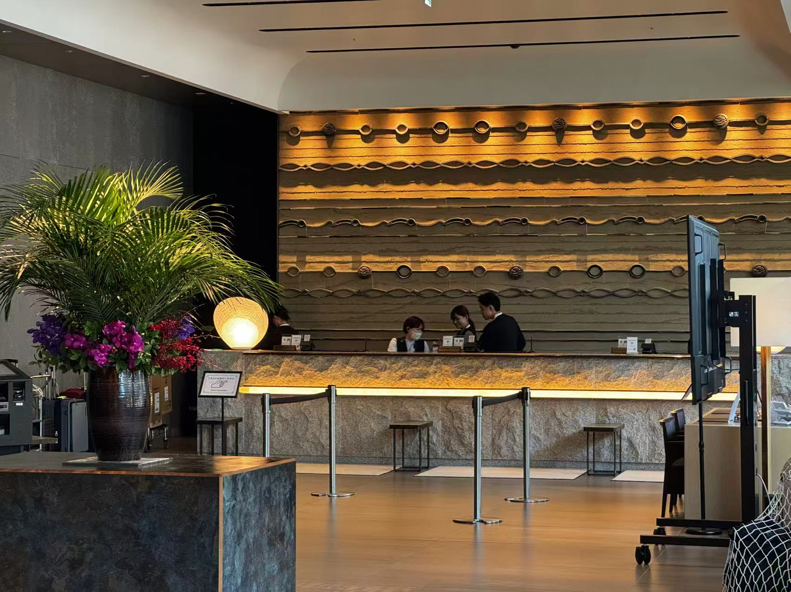
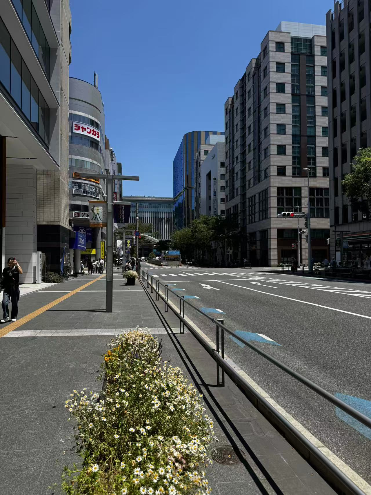
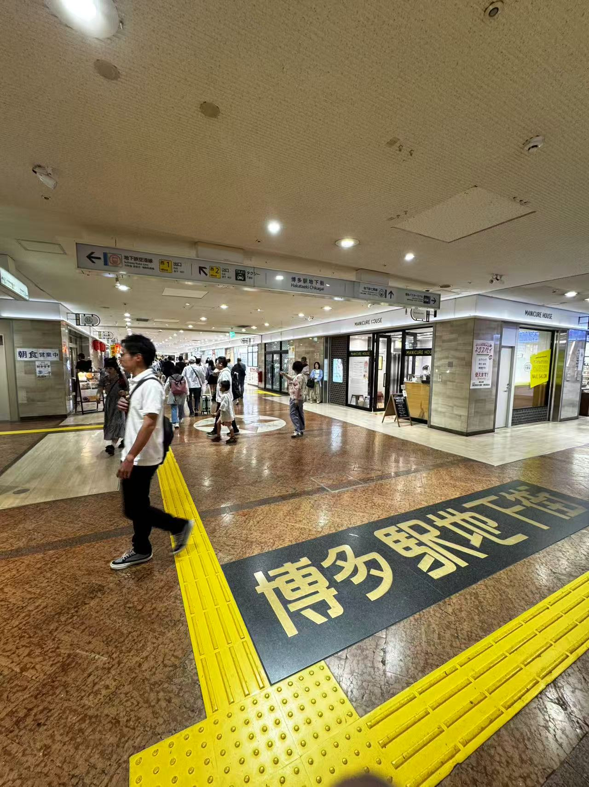
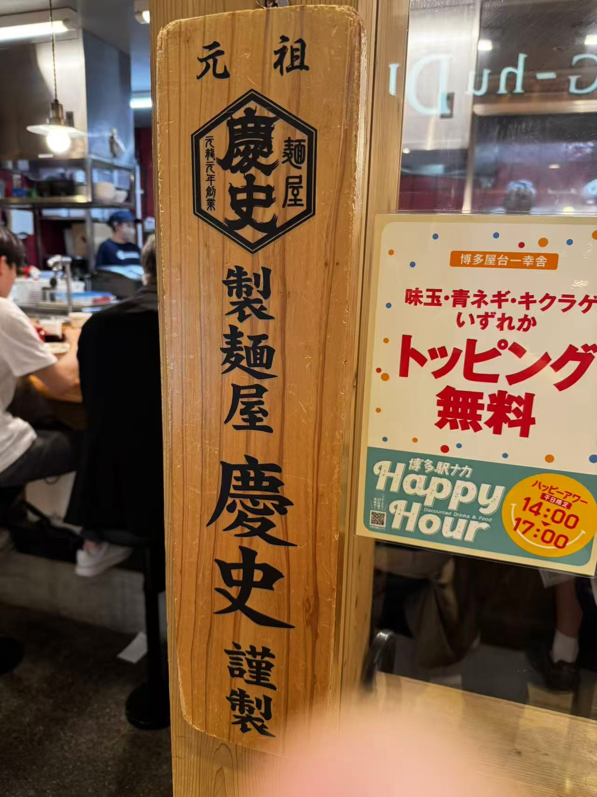
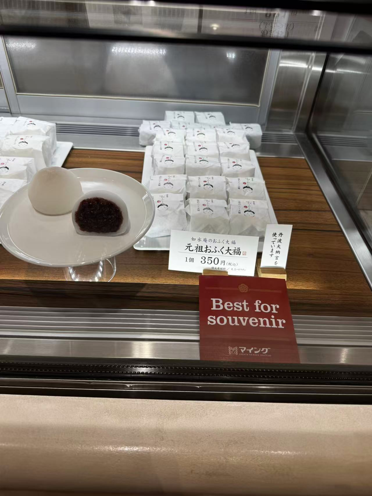

福岡之旅 · 啟程

一趟說走就走的小旅行。清晨五點半從桃園出發，飛往福岡。在博多地下街吃一幸舍泡系拉麵、排隊買大福、逛 OIOI 百貨，最後以夜晚的大東園燒肉和櫛田神社的千年歷史收尾。這是福岡的第一天。
🌅 清晨出發
05:30 天還沒全亮就從家裡出發去桃園。
05:50 抵達桃園機場，辦理行李托運。清晨人不多，過程很順利。

✈️ 登機 · 長榮 BR 106
06:20 通關完畢，進到管制區等候。站在登機門前，看著窗外的飛機起落。
07:00 看到今天的座駕—長榮航空 BR 106 飛往福岡。


07:46 坐好了，繫上安全帶。準備起飛 ✈️
🇯🇵 福岡到著
從空中俯瞰福岡，天氣不錯。約兩小時的飛行，九州就在腳下。


11:06 降落福岡機場！九州之旅正式開始！
🏨 THE BLOSSOM HAKATA Premier
12:28 到飯店辦好 check in，放下行李。這次入住 THE BLOSSOM HAKATA Premier，位置在博多車站步行範圍內，交通非常方便。

🚶 漫步博多
12:48 從飯店出發，漫步往博多車站方向。


走進博多車站地下的商店街，熱鬧又有在地氛圍。
🍜 博多拉麵午餐 · 一幸舍


13:24 來到福岡第一餐當然是拉麵！在地下街找到了博多一幸舍——泡系豚骨拉麵的始祖店。一幸舍創立於 2004 年，以獨特的「泡系」技法打出綿密細緻的湯泡，讓豚骨湯頭濃郁卻不油膩。目前足跡已遍佈全球超過 10 個國家，是福岡最具代表性的拉麵品牌之一。
🍡 飯後甜點 · 大福
14:00 吃完拉麵當然少不了甜點！來一顆最愛的大福，軟糯紮實。

🛍️ 博多 OIOI & 排隊美食
15:00-17:00 在博多 OIOI 八樓逛逛，途中發現排隊美食，跟著排就對了。

🥩 大東園燒肉晚餐
18:00 福岡之夜的重頭戲——大東園燒肉！大東園是博多知名的老字號燒肉店，位於櫛田神社斜對面。肉質極佳，搭配在地啤酒，完美的一餐。


⛩️ 櫛田神社夜訪
19:14 吃完燒肉散步到櫛田神社，就在大東園斜對面過馬路就到。
📜 歷史沿革
櫛田神社創建於 西元 757 年（天平宝字元年），距今已有超過 1260 年的歷史。相傳是從伊勢國松坂（今三重縣松阪市）的櫛田神社分靈而來，作為博多港町的守護神而建立。戰國時代末期，豐臣秀吉在統一九州後進行博多復興時，於 1587 年（天正 15 年）下令重建了社殿。
⛩️ 供奉神明
- 大幡主命（櫛田宮） — 厄除、商売繁盛
- 天照大御神（大神宮） — 國家鎮護、五穀豐穣
- 須佐之男命（祇園宮） — 悪霊退散、疫病消除
自古以來被視為博多的總鎮守，當地人親切地稱之為「お櫛田さん」。
🎋 博多祇園山笠
每年 7 月 1 日至 15 日舉辦的博多祇園山笠是櫛田神社最大的祭典，已被指定為日本重要無形民俗文化財。祭典期間，男性扛著高達十幾公尺、重約一噸的豪華山笠神轎在博多街頭奔跑，場面震撼。神社內常年展示著一座巨大的山笠神轎。


夜晚的櫛田神社格外寧靜。成排的燈籠亮起暖黃光芒，映照著古老的社殿與巨大的山笠，氣氛莊嚴而美麗。


🌊 博多運河城水舞
20:02 從櫛田神社散步 2 分鐘就到博多運河城，正好趕上晚上的水舞秀。B1 中央廣場定時上演水舞表演，夜間搭配燈光與音樂，比白天更加絢麗動人。


伴隨音樂與燈光的博多運河城水舞秀，為福岡第一天畫下完美句點 ✨